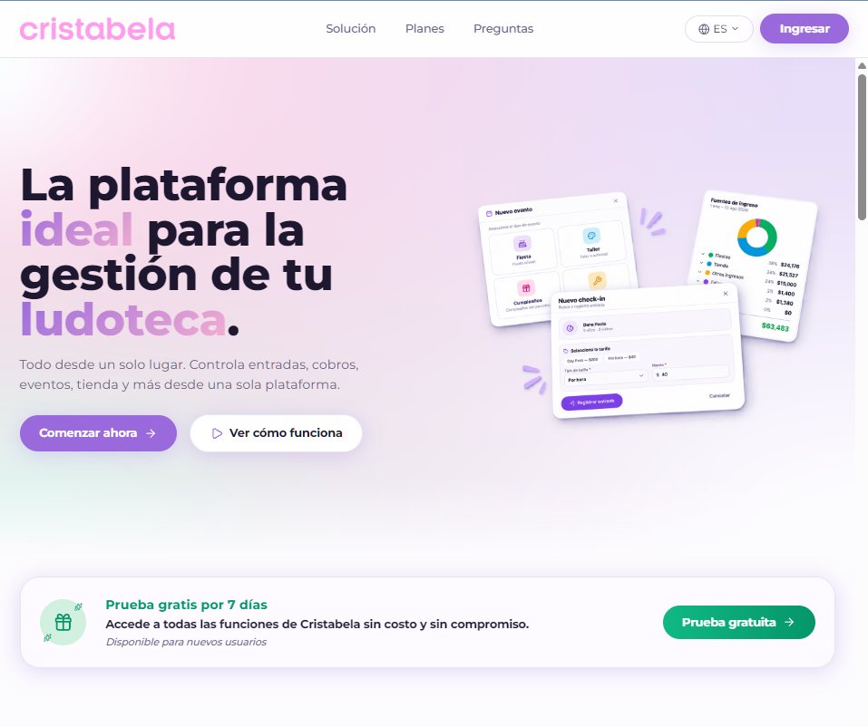
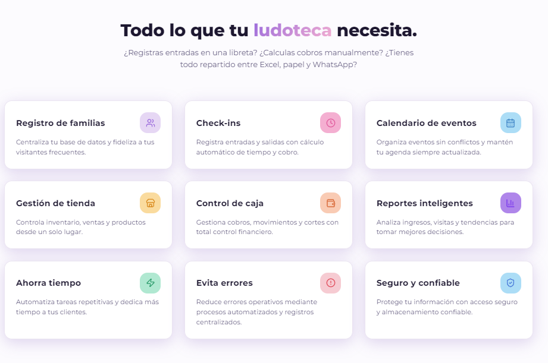
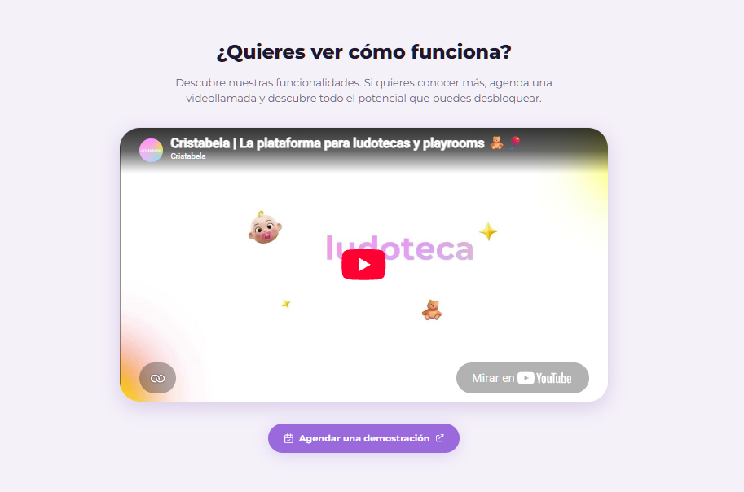
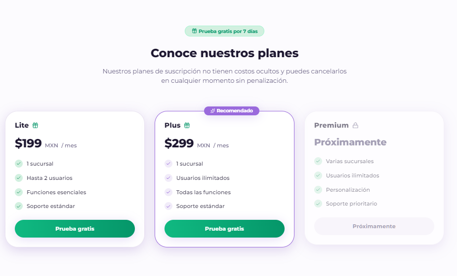
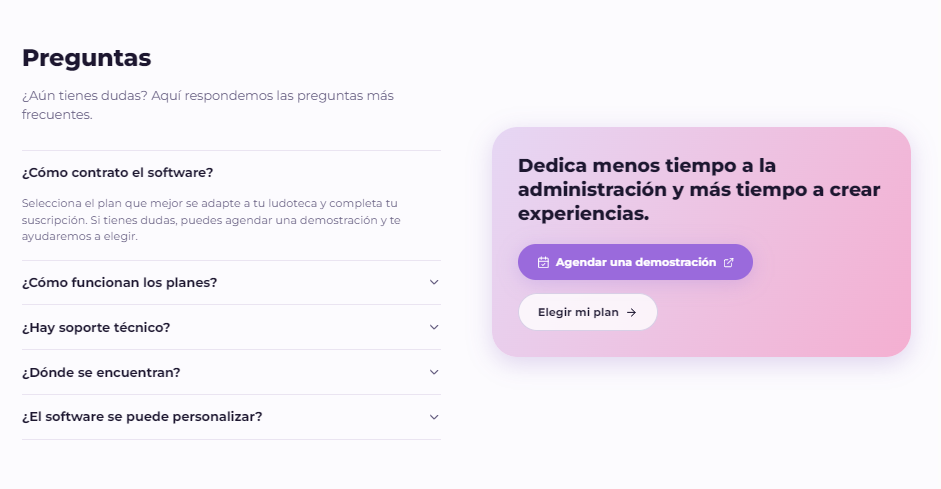

UX/UI Design · UX Research · Platform Redesign
Timeline: 8 weeks
Role: Product & Brand Designer
Platform: Web-based SaaS Platform
Scope: Brand redesign, UX research, information architecture, UX/UI redesign, and interactive prototyping.
The redesign aims to strengthen Cristabela's digital presence, build trust with potential clients, and support long-term customer acquisition through a more engaging and intuitive experience.
|
Build Trust (Goal 01) |
Business Need: Establish credibility and a professional digital presence. | Design Opportunity: Create a cohesive, welcoming, and trustworthy brand experience. |
|
Drive Engagement (Goal 02) |
Business Need: Capture the attention of potential clients from their first interaction. | Design Opportunity: Strengthen visual hierarchy, messaging, and key user journeys. |
|
Increase Acquisition (Goal 03) |
Business Need: Encourage schools and educational centers to become customers over time. | Design Opportunity: Reduce UX friction and create clearer paths toward registration. |
During the initial client discussion, a critical usability challenge emerged. A prospective school struggled to understand and navigate Cristabela's platform, encountering difficulties with its functionality and overall user experience. This confusion ultimately contributed to the school's loss of interest in the product.
This situation revealed a potential gap between the platform's capabilities and users' ability to understand and interact with them. The redesign therefore needed to address more than visual consistency: it required a deeper evaluation of usability, product clarity, and the experience of potential customers.
An initial review of Cristabela's public website highlighted opportunities to strengthen visual hierarchy, clarify conversion paths, and communicate the platform's value more effectively.
These observations, combined with the usability concerns reported by the client, established the starting point for investigating both the public-facing experience and the platform's internal workflows.
| Product Comprehension | A prospective customer struggled to understand the platform's features and workflows. |
| Usability Friction | The client reported difficulties with functionality and ease of use that require further investigation. |
| Visual Hierarchy | Features share similar visual emphasis, making information prioritization an area to evaluate. |
| Conversion Clarity | Multiple CTAs may create uncertainty about the next step. |
| Audience Alignment | Current messaging focuses on playrooms, while the business also aims to reach schools. |
| Clarity & Usability | Simplify essential workflows and support task comprehension. |
| Trust & Engagement | Create a welcoming, credible, and consistent experience. |
| Business Alignment | Connect user needs with customer acquisition goals. |
| Development Feasibility | Prioritize actionable recommendations within technical constraints. |
The UX audit will examine the existing experience through usability principles, information architecture, interface consistency, and task-oriented navigation.
The analysis will focus on identifying friction points, evaluating critical user flows, and distinguishing interface-level issues from broader product experience challenges.
Areas of Analysis: Navigation and information architecture, feature discoverability, interaction patterns, visual hierarchy, terminology, accessibility, and conversion journeys.
An initial review of Cristabela's public website revealed opportunities to strengthen how the product communicates its value, presents its features, and guides potential customers toward registration. The following observations will be explored further during the UX audit.

01. Homepage & First ImpressionThe homepage introduces the platform's purpose, but its messaging primarily addresses playrooms. Further evaluation will explore how effectively it communicates value and builds trust with schools.

02. Features & Value PropositionMultiple features share similar visual emphasis, creating an opportunity to prioritize key benefits and support faster information scanning.

03. Product DemonstrationThe section offers a product video and a demo booking option. Further evaluation will explore whether these resources help prospective customers understand the platform's functionality.

04. Pricing & ConversionSubscription plans communicate pricing and included features. The clarity of plan differences and the steps toward registration should be evaluated to support informed decisions.

05. FAQ & Final CTAThe FAQ addresses common questions alongside demonstration and plan selection options. Further analysis will assess how effectively this section resolves concerns and guides visitors toward their next step.
These initial observations provide a foundation for investigating information hierarchy, audience alignment, and conversion clarity. Additional research will determine their impact on the user experience.
| Stakeholder Insights | Document the client's business expectations, reported usability concerns, and priorities for the redesign. |
| Heuristic Evaluation | Review the interface against established usability principles to identify potential interaction and navigation issues. |
| Task Flow Analysis | Examine how users navigate essential workflows, identifying unnecessary steps, unclear actions, and possible friction points. |
| Competitive Analysis | Examine comparable digital products to understand common interaction patterns and identify relevant design opportunities. |
| Usability Validation | Where access to participants is available, evaluate key tasks with representative users to assess comprehension, navigation, and ease of use. |
The initial discovery phase established product comprehension, usability friction, visual hierarchy, and conversion clarity as priority areas for further investigation.
These observations are preliminary and will inform the UX audit rather than serve as validated usability findings. Subsequent research will determine which issues have the greatest impact on users and which improvements should be prioritized.
The redesign strategy focuses on simplifying critical workflows, improving product comprehension, and creating a consistent visual experience across Cristabela.
The process combines UX improvements with brand exploration, aligning user needs, business goals, and technical feasibility.
The Challenge: Help users locate essential features and understand the platform's structure.
Proposed Approach: Review navigation, information grouping, and task organization to establish clearer user journeys.
The Challenge: Reduce friction during onboarding, configuration, and daily operations.
Proposed Approach: Analyze critical workflows, develop wireframes, and prioritize usability improvements.
The Challenge: Create a recognizable, approachable, and trustworthy product experience.
Proposed Approach: Refine the brand identity and develop consistent visual elements and reusable UI components.
Information architecture, user flows, and wireframes will guide the redesign of navigation and essential interactions. Particular attention will be given to first-time setup and operational workflows.
Visual research will explore references, brand personality, and interface styles to establish a cohesive direction for Cristabela's redesign.
The visual system will define accessible color combinations, typography hierarchy, and consistent styling for interactive elements across the platform.
Supporting visual assets will be explored to extend the brand identity into backgrounds, illustrations, and interface details, particularly within login and onboarding.
This section will document the redesign across Cristabela's key screens and workflows, showing how usability and visual decisions are applied throughout the product.
Each group will present relevant interface changes, supporting design decisions, and comparisons with the existing experience.
The interface system will organize reusable components, interaction states, and visual guidelines to support consistency across the redesigned platform.
The redesign will examine the first-time experience, including account access, initial setup, and guidance for new users. The objective is to make the first steps easier to understand and complete.
Dashboard and navigation explorations will focus on information hierarchy, feature discoverability, and access to everyday management tasks.
Configuration workflows will be reviewed to make business setup more understandable, improve form interactions, and organize related settings clearly.
Core operational workflows will be reviewed to support efficient task completion and reduce potential interaction friction during everyday business management.
Communication features will be evaluated to clarify message organization, notification states, and important user actions.
Selected comparisons will highlight the most relevant usability and visual changes, explaining the reasoning behind each design decision.